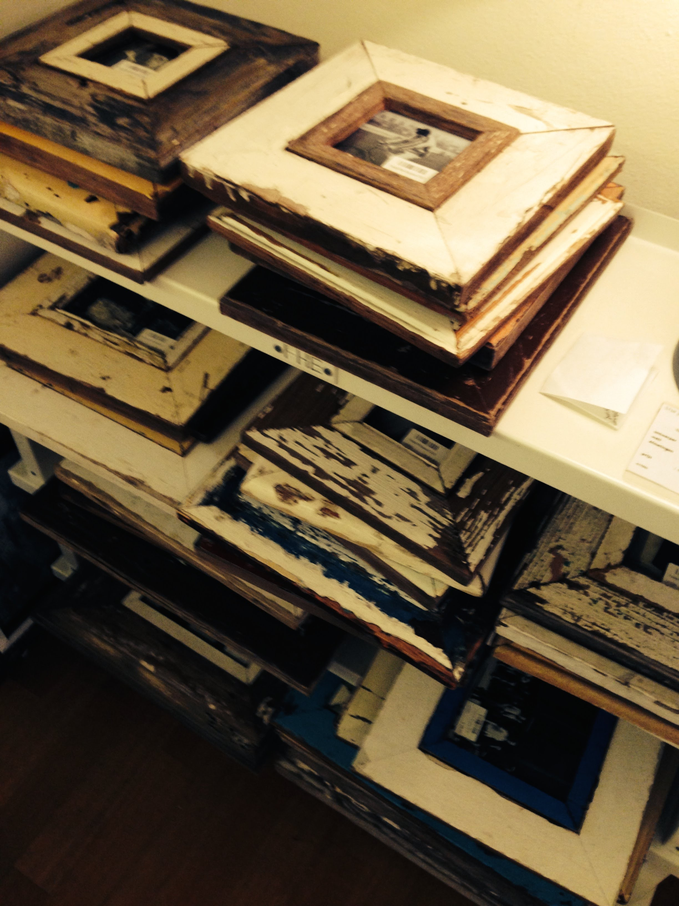

Name tunnel-shadows Date 2024-02-22 Notes Underground passage study. Natural light infiltrating constructed space.
 Name archive-stacks Date 2024-02-22 Notes Physical memory containers. Documentation of documentation.